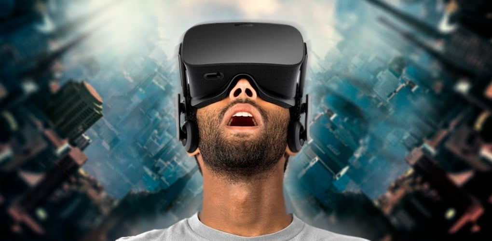

Realidade Virtual
É um ambiente gerado por um computador, com diversos elementos que parecem ser reais, mas para isso você deve usar os óculos ou capacete de realidade virtual.
Objetivo é projetar no meio digital elementos do mundo físico, em tempo real. Para isso, utiliza-se técnicas e ferramentas tecnológicas para aumentar a sensação de realidade para o indivíduo.
Na década de 30 Edward Link que foi o primeiro homem a inventar um simulador de voo comercial.
